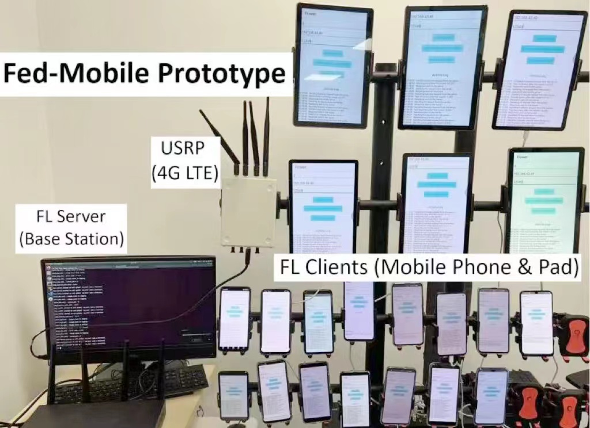
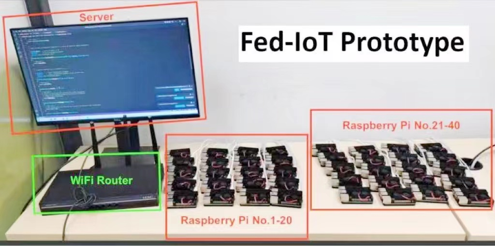

Education
Hong Kong University of Science and Technology (2023 -)
Doctor of Philosophy (PhD) in Electronic and Computer Engineering
My superviors: Prof. Bing Luo (DKU) and Prof. Xuanyu Cao (HKUST)
The Chinese University of Hong Kong, Shenzhen (2019 — 2023)
Bachelor of Engineering in Electrical and Computer Engineer, Stream: Computer Engineering
Publications
- Shao, J.,Yuan, T., Lin, T., Cao, X., and Luo, B., Cognitive Insights and Stable Coalition Matching for Fostering Multi-Agent Cooperation, arXiv e-prints, arXiv:2405.18044.
- Shao, J., Lin, T., Cao, X., and Luo, B., “Federated Unlearning: a Perspective of Stability and Fairness”, arXiv e-prints, 2024. doi:10.48550/arXiv.2402.01276.
- Shao, J., Han, S., He, C., and Luo, B., "Privacy-Preserving Federated Heavy Hitter Analytics for Non-IID Data", in Workshop on Federated Learning and Analytics in Practice: Algorithms, Systems, Applications, and Opportunities, in Conjunction with ICML 2023 (FL-ICML' 23), Jul. 2023.
Projects
FedKit: Enabling Cross-Platform Federated Learning for Android and iOS
- We present FEDKIT, which pipelines Cross-Platform FL for Android and iOS development by enabling model conversion, hardware-accelerated training, and cross-platform model aggregation.
- Our workflow supports flexible federated learning operations (FLOps) in production, facilitating continuous model delivery and training.
- This is a collaborative project with my supervisor Prof. Luo, DKU undergraduate students Sichang He (lead), Beilong Tang, and Boyan Zhang, as well as collaborators Xiaomin Ouyang (UCLA) and Daniel Nata (Flower).
- Our work has been ACCEPTED at IEEE INFOCOM 2024 Demo 🎉.
 |
 |
|---|---|
| FedKit Pipeline Overview | FedKit Simulation |
FedCampus: A Privacy-Preserving Data Platform for Smart Campus
- We’re excited to announce the launch of the FedCampus Project - a privacy-preserving smart campus application, available on Android and iOS. 🎉 Video online available.
- This app implements two key privacy-preserving technologies: Federated Learning and Differential Privacy. Check out our 100 customized smart watches for participants at DKU and FedCampus APP.
- This is a collaborative project with my supervisor Prof. Luo and DKU undergraduate students.
 |
|
|---|---|
Edge-based Cross-device Federated Learning Prototypes
- Our prototype supports Mobile and IoT devices operating at WiFi and USRP-based 4G/5G wireless networks.
- This is a collaborative project with my supervisor Prof. Luo and students from CUHKSZ


Teaching Assistant
- ELEC3120 - Computer Communication Networks (HKUST, Spring 2024)
Patents
- B. Luo, J. Shao, Method and Apparatus for Online Parameter Selection in Minimizing the Total Cost of Federated Learning, CN202310485067.8, Apr. 2023, field
- B. Luo, J. Shao, Method and Apparatus for Online Client Sampling in Minimizing the Training time of Federated Learning, CN 202310484383.3, Apr. 2023, field
- B. Luo, J. Shao, J. Huang, Method and Apparatus for Frequent Items Mining Using Federated Analytics, CN202310365167.7, Mar. 2023, field
- B. Luo, J. Shao, J. Huang, Method and Apparatus for Frequent Data Mining Based on Hierarchical Federated Analytics, CN202310330791.3, Mar. 2023, field